I am currently an Associate Professor at the School of Computer Science and Engineering, Nanjing University of Science and Technology. My research interests focus on Human-Centered Computer Vision, Pattern Recognition, Generative AI and Embodied AI. I am looking for self-motivated Ph.D./Master students with strong research interests in 3D Vision, Generative AI, and Embodied AI.
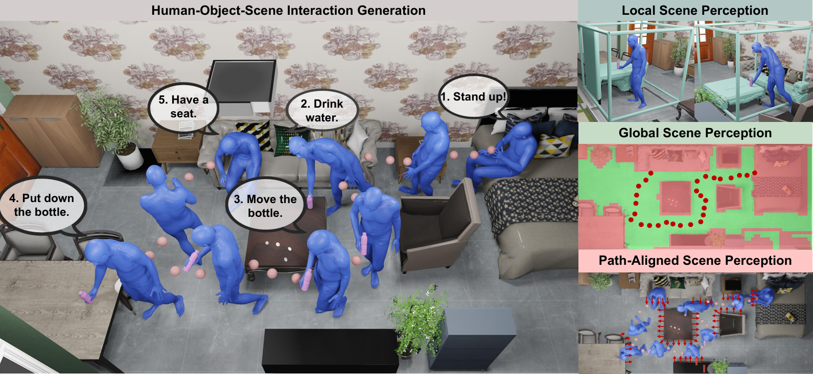
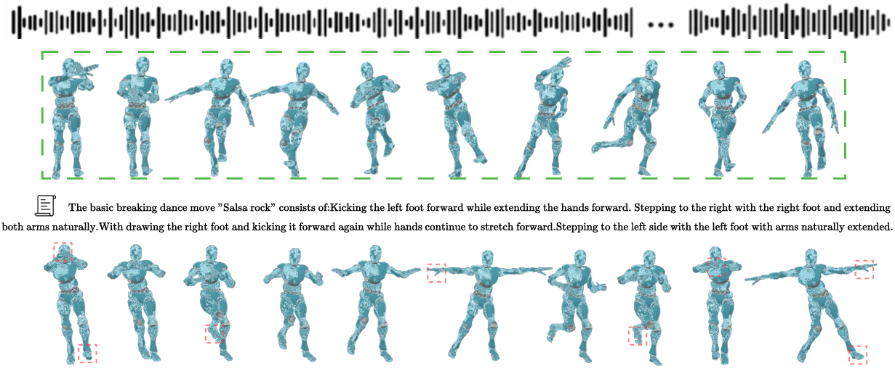
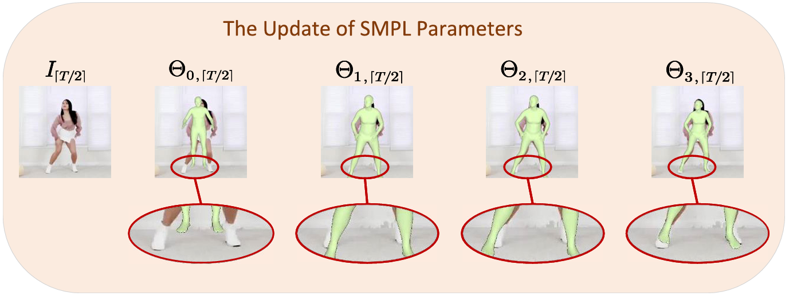
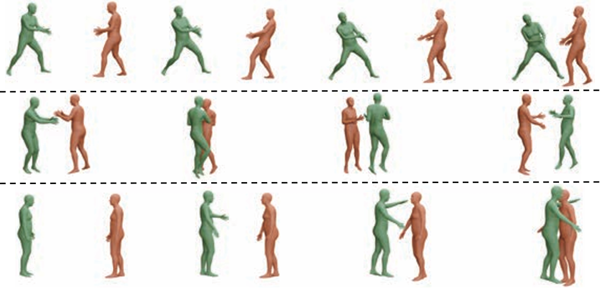
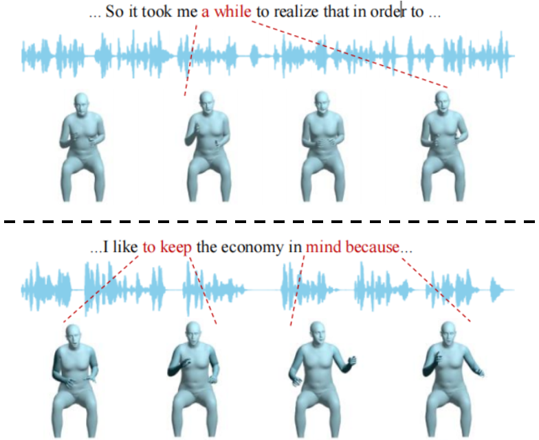
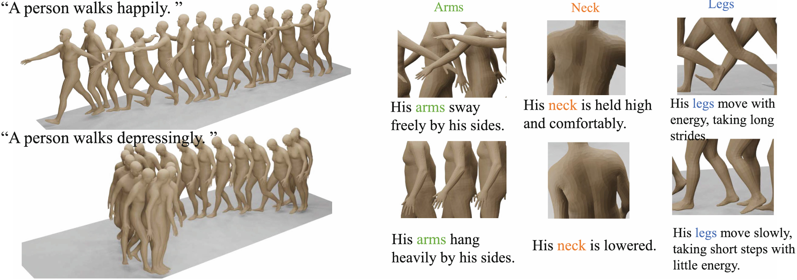
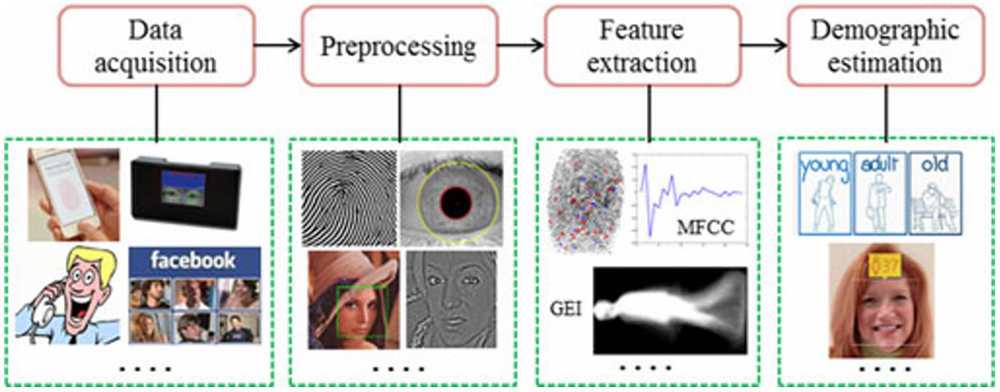
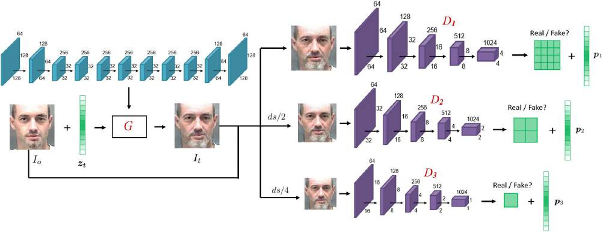
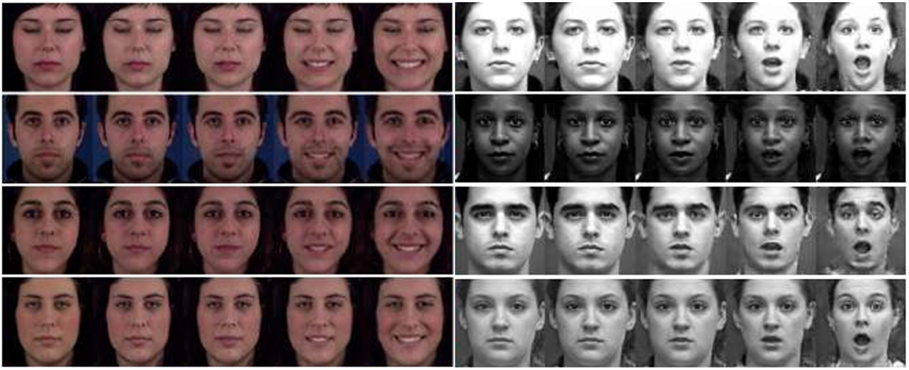
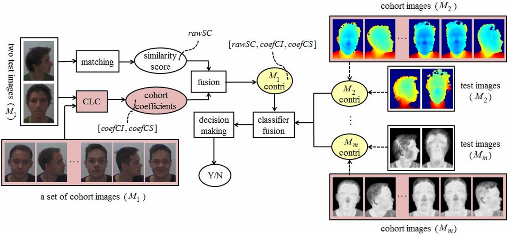
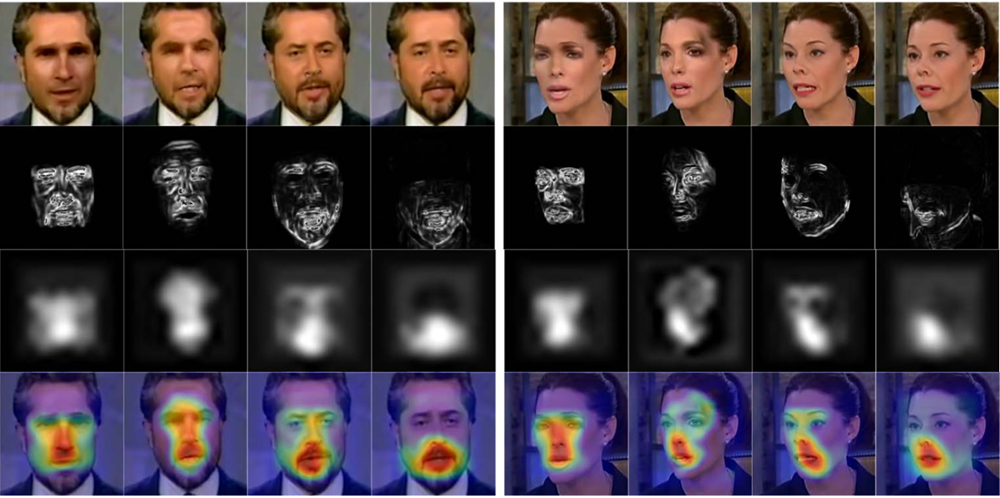
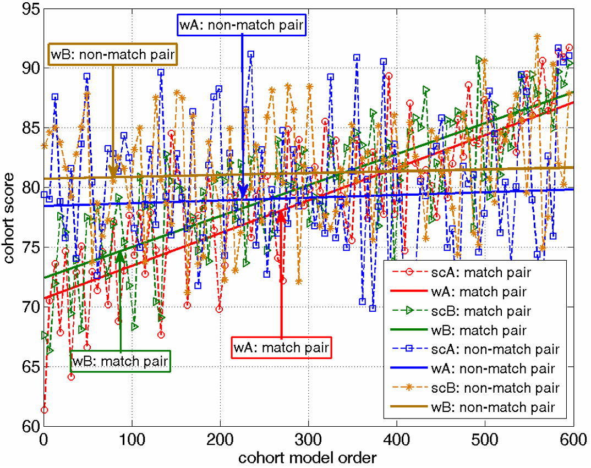
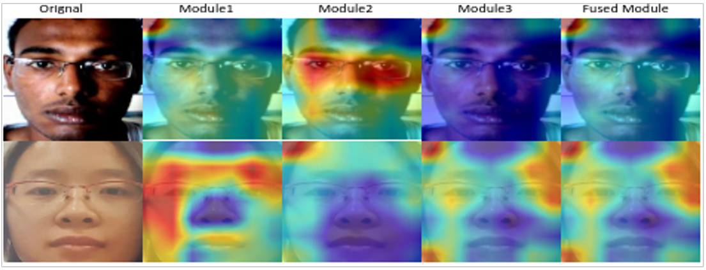
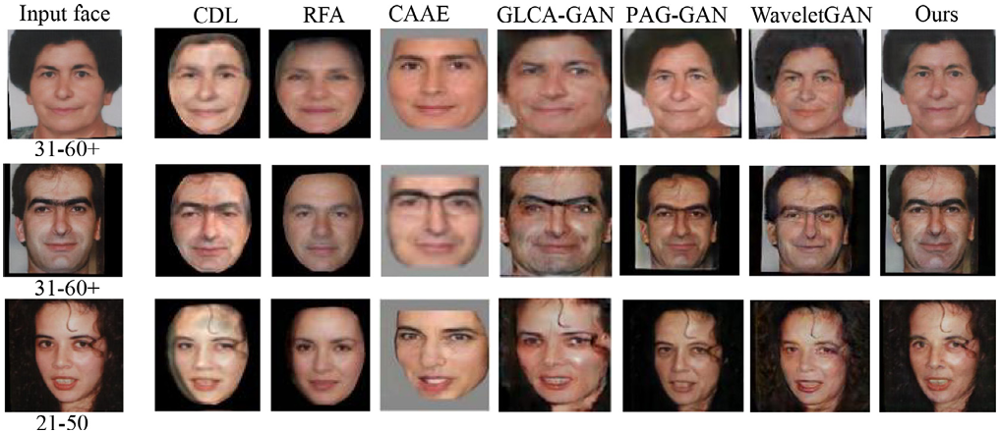
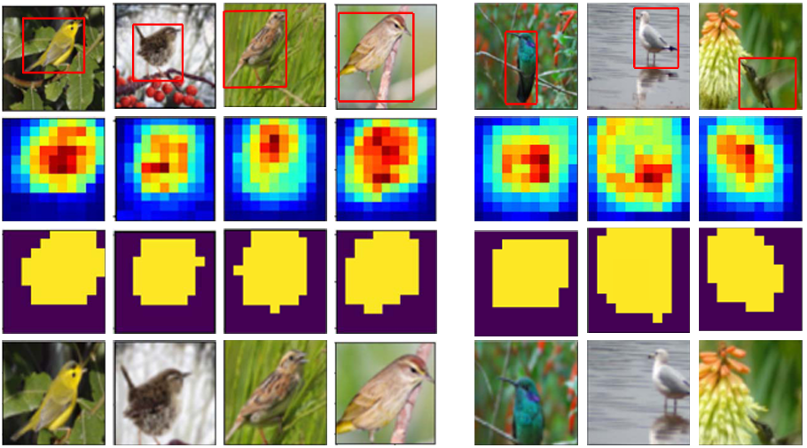
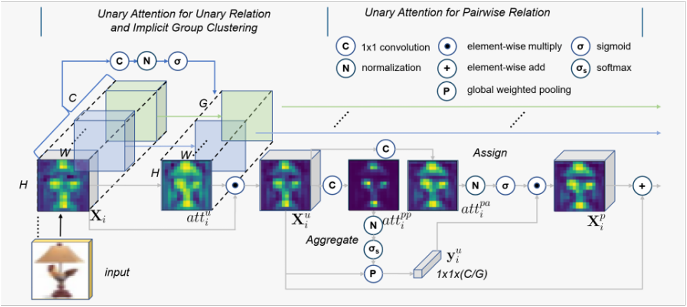
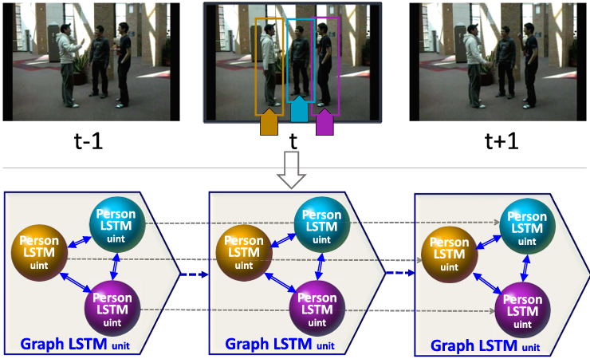